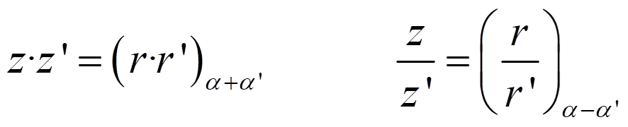
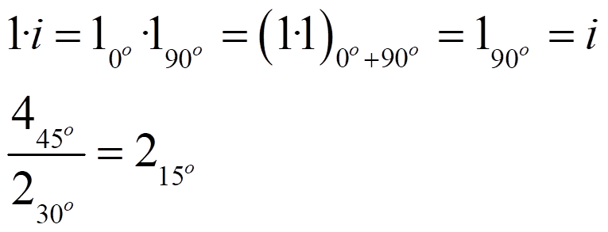
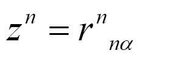
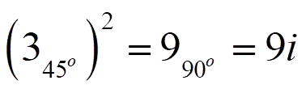
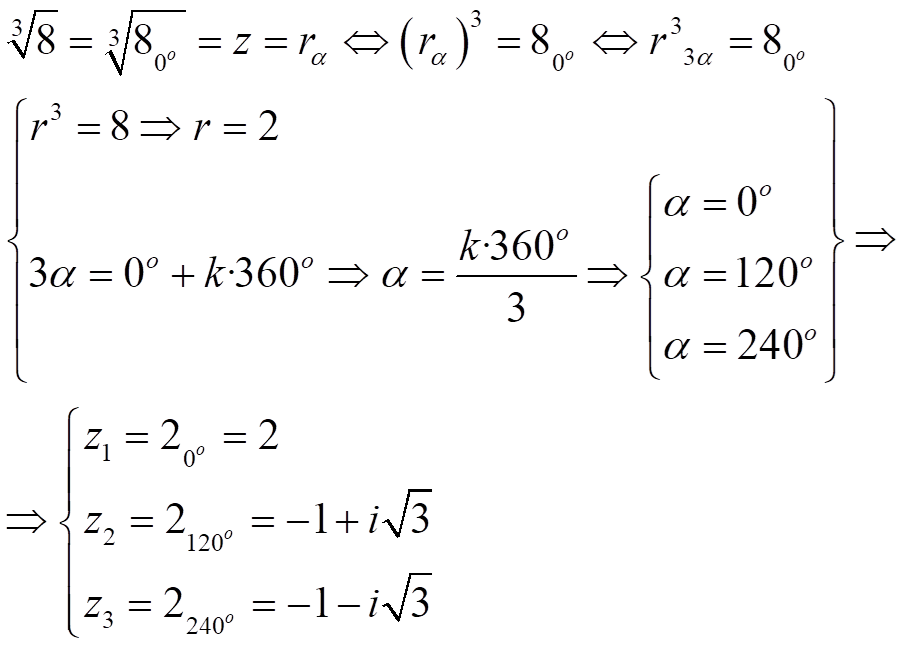
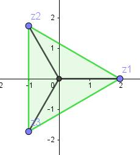
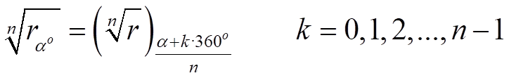
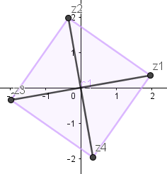

Números complejos
operaciones en forma polar
La forma polar no es adecuada para la suma y la resta, pero hace mucho más sencilla la multiplicación y la división. Sean z =rα y z’=r’α’, entonces:

Ejemplos:

Las potencias entonces serían:

Por ejemplo:

Para las raíces, veamos un ejemplo:

En general:

Ejercicio. Sean z = 1640o y w = 215o Calcula:
a) z·w
b) z/w
c) w5
d) 4√z (y representa sus afijos)
Soluciones: a) 3255o; b) 825o; c) 3275o
d) z1=210o, z2=2100o, z3=2190o, z4=2280o

Obra publicada con Licencia Creative Commons Reconocimiento No comercial Compartir igual 3.0